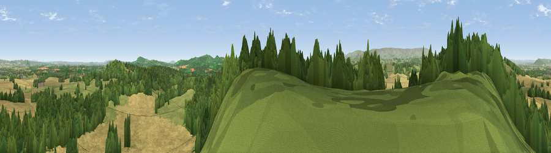

Viewpoint near Cockyard
#7040 in England · top 22% of its area beats it · near CockyardWhere it is
The exact computed spot (SO 41675 33225). Click the marker for map links.
The view, rendered

A 360° render of this exact spot computed from the terrain model, tree cover and land cover — summer colours, afternoon light, calibrated against photographs of famous viewpoints. Real trees, hedges and buildings will differ in detail.
The panorama
Grey silhouette: terrain skyline in each direction (720 bearings, Earth curvature and refraction included). Dashed green: skyline with trees (+15 m) and buildings (+8 m) as obstacles. Blue strip: how far the ground is visible on each bearing.
Where the view opens
Wedge length = distance to the farthest visible ground on that bearing (vegetation-aware). Rings at 10, 25 and 50 km.
What fills the view
44% cropland · 34% woodland · 21% grassland ·
Angular shares of the visible panorama (visual magnitude), not map area. Landscape diversity 0.47 (0–1 Shannon).
Key numbers
More beautiful places nearby
The staircase of upgrades: each row has a higher view potential than everything closer. Driving times are estimates from straight-line distance, calibrated against real road routing — check an actual route before setting out.
| Place | Direction | Drive | Score |
|---|---|---|---|
| Viewpoint near Cockyard | NW · 0 km | ~2 min | 70.3 |
| Newbarns Hill | WNW · 4 km | ~9 min | 72.8 |
| Viewpoint near Tyberton | NW · 6 km | ~13 min | 74.5 |
| Viewpoint near Orcop Hill | SE · 7 km | ~14 min | 78.7 |
| Viewpoint near Orcop Hill | SE · 7 km | ~14 min | 80.7 |
| Garway Hill | SSE · 8 km | ~17 min | 84.6 |
| Millennium Hill | E · 35 km | ~53 min | 86.9 |
| Worcestershire Beacon | ENE · 37 km | ~56 min | 87.1 |
51.99439, -2.85088 · source: screening · position refined by local search. Computed location — check access rights before visiting.